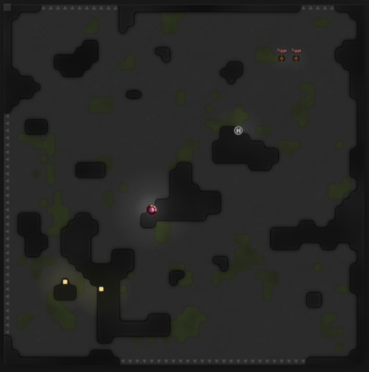
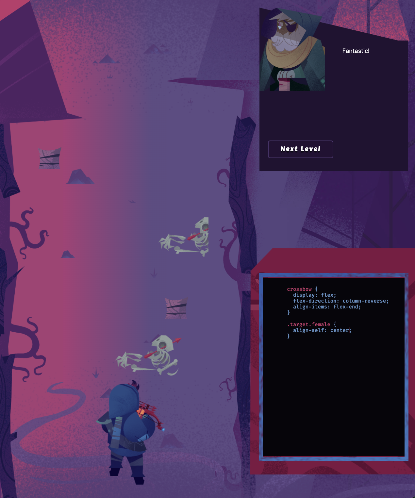
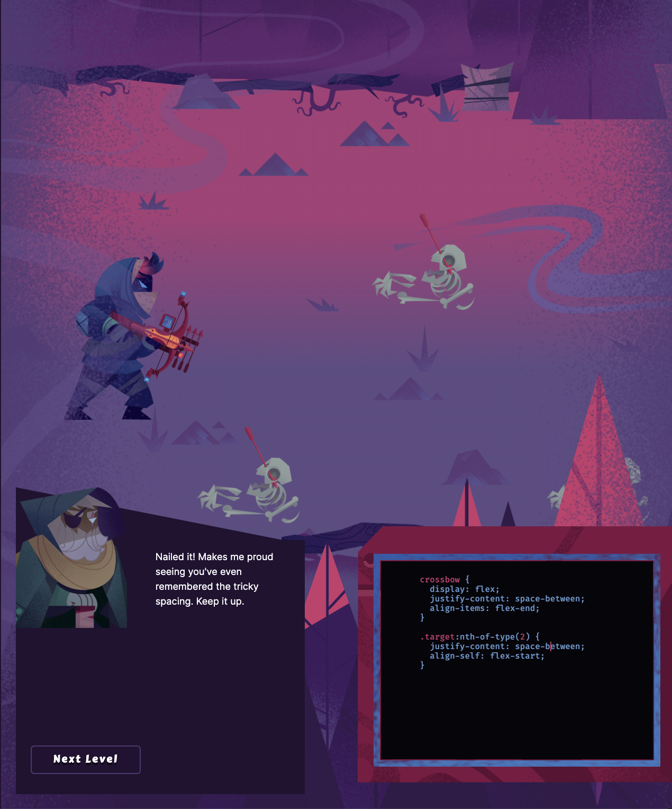

1. Prove that there are infinitely many twin primes. (Here an internet search can help you.) Discuss.
There are infinitely many twin primes simply because their are infinitely many regular primes.
2. Install and test the pageres command. Do the first 3 steps below; then for all of the rest of the steps copy all the output into a single long < pre> tag as your answer.
- cd to your October 10 homework directory
- run http-server -- now your terminal tab is busy, so ...
- open a new Terminal tab with ⌘ + T
- npm install -g pageres-cli
- pageres --help
- pageres http://127.0.0.1:8080/hw2021-10-10.html
- ls -l 127*
- pngquant 127*
- ls -l 127*
- rm 127*
so... this is unfortunate, there is an error and I am not sure what it means.
npm ERR! code 1
npm ERR! path /Users/dancedude/.nvm/versions/node/v15.12.0/lib/node_modules/pageres-cli/node_modules/puppeteer
npm ERR! command failed
npm ERR! command sh -c node install.js
npm ERR! The chromium binary is not available for arm64:
npm ERR! If you are on Ubuntu, you can install with:
npm ERR!
npm ERR! apt-get install chromium-browser
npm ERR!
npm ERR! /Users/dancedude/.nvm/versions/node/v15.12.0/lib/node_modules/pageres-cli/node_modules/puppeteer/lib/cjs/puppeteer/node/BrowserFetcher.js:112
npm ERR! throw new Error();
npm ERR! ^
npm ERR!
npm ERR! Error
npm ERR! at /Users/dancedude/.nvm/versions/node/v15.12.0/lib/node_modules/pageres-cli/node_modules/puppeteer/lib/cjs/puppeteer/node/BrowserFetcher.js:112:19
npm ERR! at FSReqCallback.oncomplete (node:fs:193:21)
npm ERR! A complete log of this run can be found in:
npm ERR! /Users/dancedude/.npm/_logs/2021-10-23T18_59_12_140Z-debug.log
3. For the homework that was due June 18, turn it into an html file with associated image files. Use pageres to make an image of that file and include it as your answer here. And don't forget to use pngquant as well!
4. Easy console work, plus a "discuss" question:
const Dog = { barks: true }
const Pug = Object.create(Dog)
Pug.barks
// what's going on here? Hint: mdn prototypal inheritance
5. Mental math, powers of 2: On some different occasions during the weeks of this assignment, try to do 2⁰ through 2¹⁶ in your head at nighttime in bed with your eyes closed. Visualize the numbers. Then, towards the end of the assignment time period, write about this exercise.
6. Write a function called randObject that takes no parameters. When invoked it will return an object having a random number of properties (random from 6-12). Each property will have a key that is a random lowercase English letter, and a value that is a random integer in the range 1-4. Show your code and some sample runs.
7. Create a graph containing six 6th degree polynomials, with the following extra rules:
- Have your x-axis and y-axis range from -15 through +15 (length of 30)
- None of your functions can be too steep! So:
- Hopefully you don't see dotted lines
- Every function must have some width to it -- for example f(x) = x**6 is bad, but g(x) = 0.0001*x**6 is good.
- No local minima or maxima can can go outside the window!
- Create some space between the functions; they shouldn't be "on top" of each other too much
- Your functions should wind up and down
- See the example image to see an example result. Also, we will discuss all this, and clarify any questions.
- Hint: Try playing in Desmos first: https://www.desmos.com/calculator
8. Write 5 miraculous, delirious, floating, rhythmical, stimulating, poetic, cultivated, mystical, sensitive functions and put them all on the same graph. Constraints:
- Only use these things to make your functions: sin + *
- Numbers are ok too (or challenge yourself and go numberless)
- Function composition is ok (and encouraged! ... use it a lot!)
9. Screeps update:
- Show a screenshot of Screeps and describe what’s going on
- 2 days later: show another screenshot, and describe what has changed
- 3 days after that: show a third screenshot, describe what has changed,
- Write a summary describing the whole arc of what happened. Include a few interesting code samples and explain them.
- This screenshot was taken just after I had been attacked by... TIGGAAAAAAA!!!!!!!!

10. Zombie Flexbox game. Go through two more levels. Take two screenshots at interesting moments and explain all of the Flex details you are working on.
display: flex to turn it on
flex-direction: to set where it fires
align-items/align-self: to set the exact alignment


11. Write a function xPlusOneToThe(n) that takes a positive integer n and returns the polynomial expansion of (x+1)ⁿ. Show your code plus a screenshot with these 4 assertions passing, and show the result of the fifth expression.
- console.assert(xPlusOneToThe(1) == "x + 1")
- console.assert(xPlusOneToThe(2) == "x² + 2x + 1")
- console.assert(xPlusOneToThe(3) == "x³ + 3x² + 3x + 1")
- console.assert(xPlusOneToThe(10) == "x¹⁰ + 10x⁹ + 45x⁸ + 120x⁷ + 210x⁶ + 252x⁵ + 210x⁴ + 120x³ + 45x² + 10x + 1")
- xPlusOneToThe(100)
12. Write an original kaboom game from scratch.
- Cris and Alex can work together in the same game
- You can work in replit and deploy it with surge
- Take some screenshots of the game and some snippet of the code
- Write some observations about it
- Obzervationes: So, my only one so far is that loading sprites is really annoying.